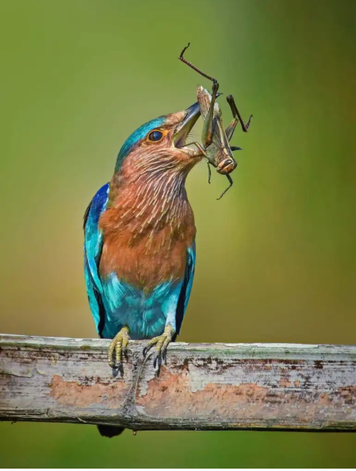

3. State Bird: Palapitta (Indian Roller)
Scientific Name: Coracias benghalensis.
Mythology: Known as the bird of victory, it is believed that Lord Rama spotted the Palapitta before his battle with Ravana, leading to his success.
Tradition: Spotting this "Blue Jay" on Dussehra is considered a highly auspicious omen. It is also called Neelkanth, associating it with Lord Shiva, whose throat turned blue after consuming poison to save the world.